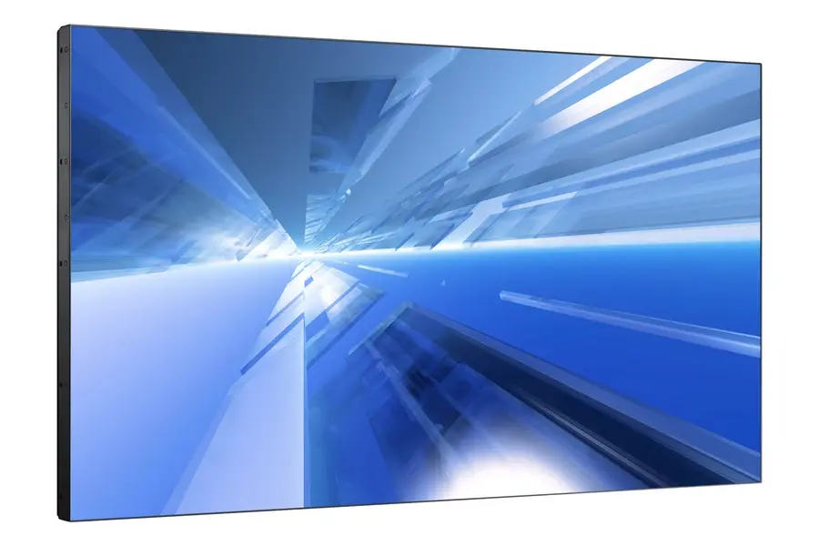

Панели для видеостен серий UD/UM/UH/VH/UE
Профессиональные панели для видеостен Samsung сочетают выверенную цветопередачу, яркое изображение и сверхтонкие рамки меньше 1 мм, позволяющие создать по-настоящему бесшовную картинку на большом экране. Светодиодные панели с разрешением до 1080p обладают отличными углами обзора, не выцветают при ярком свете и способны работать круглосуточно без снижения характеристик.